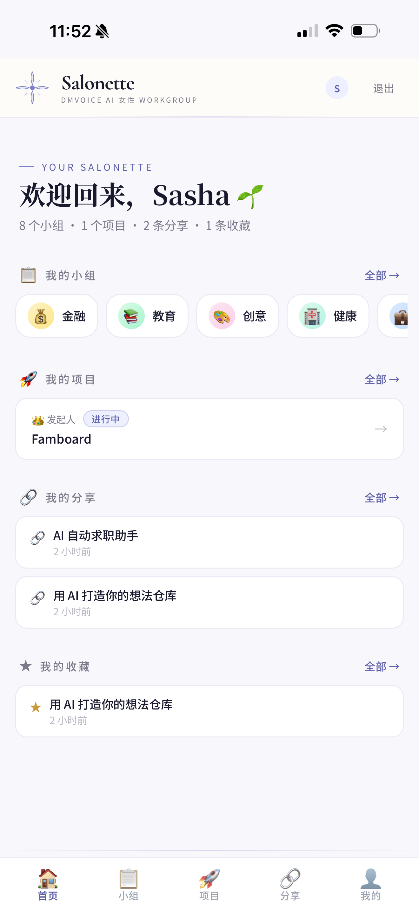
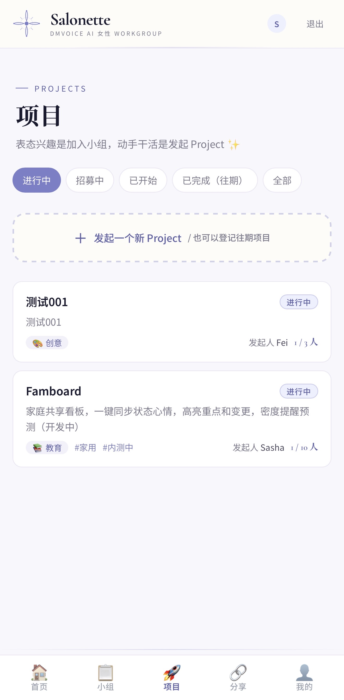
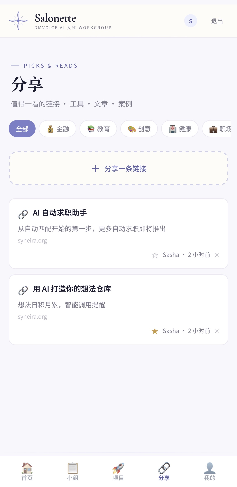

每一期 Digest，我们会把社群里正在发生的事挑出来讲讲——谁做了什么、什么项目启动了、有哪些值得一起看的东西。不是新闻，是我们自己人的动态。



这就是这个社群最让人喜欢的地方：没有人在等别人告诉她「AI 能做什么」，大家都在自己动手试。有的做工具，有的做内容，有的提一个想法然后一群人一起把它变成产品。
不用很完美，先做出来。
源于生活，立足应用。
实用 > 炫酷 · 能用 > 能看
← 查看往期 Digest